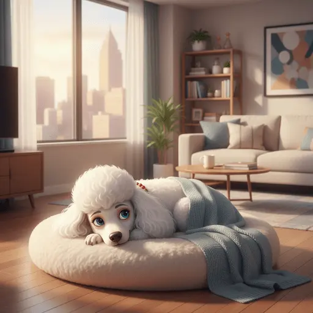

Quem é Amélia?
Amélia é uma poodle encantadora que vive uma vida comum no presente, mas possui uma imaginação tão vívida que ela realmente acredita ter vivido em épocas e mundos diferentes.
Suas "memórias" incluem ter sido uma dama medieval em um castelo majestoso, uma guerreira valente em campos de batalha épicos e até mesmo uma vampira elegante em bailes misteriosos.
Com cada latido, Amélia compartilha histórias de suas supostas aventuras passadas, encantando a todos ao seu redor com sua criatividade sem limites. Serão apenas sonhos ou Amélia realmente possui a chave para viajar entre dimensões?